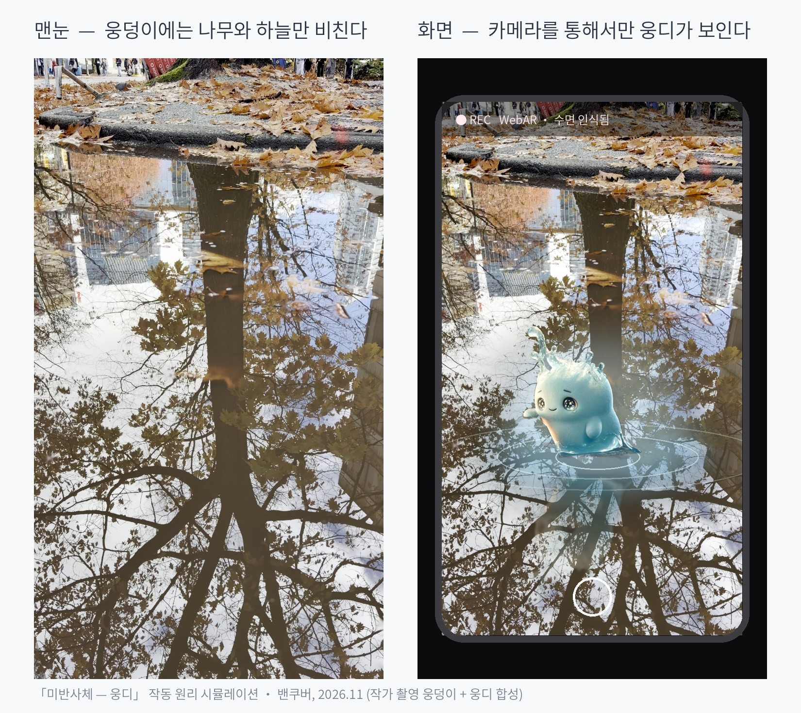

미반사체 — 웅디
The Unreflected · Mixed-reality installation · 2027
A mixed-reality installation met only on the water’s surface. Part 1, Bijarim fieldwork (July 2027). Part 2, a Jeju exhibition (October 2027).
Role: Artist · in progress
Discover